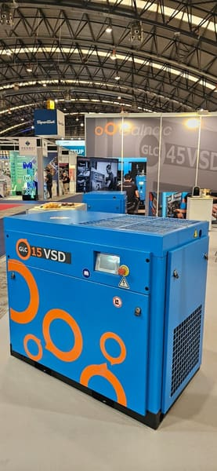

Catálogo
Nuestro Catálogo
Cuatro líneas de maquinaria y equipamiento industrial distribuidas por GALNAC S.L. desde 1996. Compresores, perforación, martillos hidráulicos y sistemas de aire y gas para taller, industria, minería y obra pública.

Compresores GLC
9 modelos · 5.5 – 160 kWCompresores de tornillo eléctricos para taller, industria y minería. También compresor sobre depósito.
Ver categoríaMartillos hidráulicos Doofor
10 modelos · DF430 – DF560Martillos hidráulicos para excavadoras y retroexcavadoras. Series DF430F a DF560L.
Ver categoría
Equipos de perforación Epiroc
2 modelos · SpeedROCPerforadoras SpeedROC para canteras, granito, mármol y roca dimensional.
Ver categoríaSistemas de aire y gas
2 productos · SERFRIAIRGeneradores de nitrógeno PSA y secadores frigoríficos para industria.
Ver categoría¿Necesita asesoramiento técnico?
Nuestro equipo le ayuda a elegir el equipo adecuado y le prepara un presupuesto a medida en 24 horas.